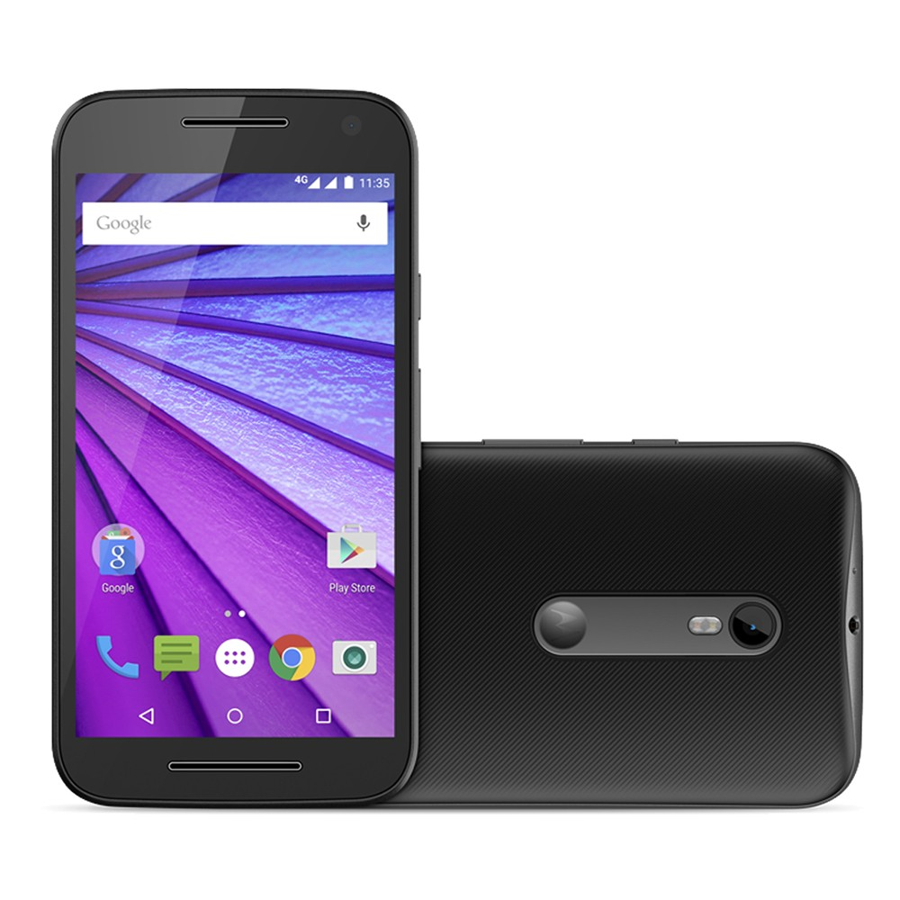

Hard reset para o MOTO G XT1556
Não importa quão dificil foi o padrão que pôs em seu dispositivo, com esse procedimento o mesmo sairá.
i Lembre-se que todos os dados do aparelho serão perdidos.
- - Desligue o aparelho.
- Pressione simultanêamente as teclas POWER + VOL - por aproximadamente 3s e solte o botão Power.
- No menu fastboot desça com a tecla Vol - até RECOVERY e pressione a tecla VOL + para confirmar.
- Desça até WIPE DATA/FACTORY RESET, confirme com o botão Power.
- Agora vá até YES___DELETE ALL USER DATE e confirme novamente.
- Ao voltar a tela de Recovery confirme em Reboot System Now para poder reiniciar o aparelho.
- Após aguardar o dispositivo iniciar o mesmo já estará sem o padrão.